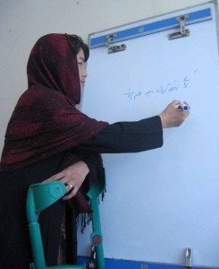

پذيرش > سایت نوشته ها > زن بودن در کشورم یعنی قهرمانی


 زن بودن در کشورم یعنی قهرمانی زن بودن در کشورم یعنی قهرمانی
17 اسفند 1390 - دکتر اسماعیل درمان - نسخه قابل چاپ
از اینجا شروع میکنم: مادرم مکتب نرفت چون پدرش فکر میکرد نیازی نیست زن به مکتب برود. به باورِ او، همینکه زن امورِ منزل را درست بلد باشد، کافی بود. مادرم اما بعد از تولد من دست به یادگیری زد و با سپری کردن چند دورۀ فشردۀ سوادآموزی آنقدر موفق بود که در دروس من در مکتب ابتدایی کمک میکرد. یادم میآید من نمراتِ خوب مکتب و موفقیتهای پی در پی خود و خواهرانم را تا حد زیادی مدیون او و تشویق و زحمتکشیهای او بودم. بعدها که موفقیت و مهارت مادرم در تنظیم امور مالی خانه را دیدم به خود گفتم اگر از استعداد او درست کار گرفته میشد شاید او حالا یکی از بهترین اقتصاددانهای شهر میشد، ولی حیف که سرنوشت او طورِ دیگری رقم خورده بود.
حالا اگر زندگی مادرم را با زنان دیگر مقایسه کنم، به راحتی میبینم که بیشترین آنها به مراتب زندگی بدتر و وضع نامساعدتری داشته اند. این زنان قربانی سوءاستفادههای عاطفی، خشونت جسمی، محدودیتهای اقتصادی و اجتماعی، و چالشهای بزرگِ دیگری بوده اند که آنها را زمینگیر ساخته است. ناآگاهی از حقوق بنیادین زنها سبب گردیده که حتا زنان خود دست به خشونت بر علیه همجنس خود بزنند و چرخۀ خشونت را قویتر و دوامدارتر نگهدارند.
من از مناسبتها زیاد خوشم نمی آید، ولی دلیل خاصی نمیبینم که از آنها خیلی بدم بیاید! مناسبتهای چون “روز زن” از این جهت خوب اند که یادآورندۀ بعضی ارزشها و رویدادها و مبارزات و معناها اند. لیکن از این جهت ناموثر اند که معمولاً تبدیل یا محدود میشوند به چندتا کلیشهگویی و سطحینگری و شعارزدگی و چند شعر در بارۀ مقامِ مادر.
در فرهنگ ما، یک دسته رفتار جمعی را مشاهده میکنید که در لابلای آنها گاه میتوان بعضی ویژگیهای خودمتناقض را دید. یکی از نمونههای خوب، نوعِ نگاه به زن و خصوصیات اوست. در بسیاری مناطق، زن همان “مال” است که سودا میشود و جزیی از حاصلات شماست: بچه میزاید، خانه جاروب میکند، آشپزی میکند، پشم میریسد، نان پخته میکند، کالاشویی میکند، عطش جنسی همسر را فرو مینشاند، به همسر دوم و سوم شوهر خوش آمدید میگوید، و… اینکه از این همه فعالیت قدردانی میشود، بماند بهجای خود، چون معمولاً فقط زحمت و دسترنج کسی ارزش دارد که در قالب چند بسته پول تجسم پیدا کند و زحماتِ زنان معمولاً درین قالب جای نمیگیرد چون تعداد زیادی از آنها معاملۀ بیرون از خانه ندارند.
اما همین “زن/مال” به یکباره “مادر” میشود و بالطبع “فرشته” میشود. فرشتۀ که از سوی فرزندان بر او انتقاد و ملاحظه روا نیست و گاه سردمدار و یکه تاز محیط داخل خانه است. حالا این مادر چقدر هنر مادری کردن میداند را باید در سلسله تربیتی خانواده دید و متأسفانه در بسیاری موارد به استثنای چند رفتار غریزی، بسیاری از این مادران از هنر مادری و تربیت فرزند چیز زیادی نمیدانند.
با آنهم رفتار خودمتناقض دیگری که رُخ مینماید این است: ما از این “فرشتگان” انتظار داریم تا ابتدا: تا میتوانند فرزند پسر تولید کنند، و بعد فرزندان صالح و بااستعداد و باتربیه پرورش دهند، البته کوشش و توجۀ شان بیشتر روی فرزند ذکور باشد. البته جامعهشناسیِ اقتصادی این گرایش مورد بحث من نیست.
بیایید از دادن نمونههای رفتار خودمتناقض بگذریم، چون گاه ناخواسته نوشتههایم گرایش دارند بروند به طرف یک بحث اکادمیک و وقتی بحث اکادمیک شد کمی خشک و خستهکن میشود.
این بار میخواهم برای چند لحظۀ چشمانم را ببندم و خود را در به شکل یک زن تصویر کنم. ولی قبل از آن این نوشته را در ذهنم مرور میکنم: “شما به من یک قهرمان نشان بدهید تا من برایش یک تراژدی بنویسم.” علت این که این جمله را اینجا نوشتم بعداً متوجه خواهید شد.
میبینم به عنوان یک زن عادی افغان چند سالی در زمان طالبان خانهنشین و از درس و مشق محروم بوده ام. زندگی برایم بیمعنا شده و به هیچ چیز خاصی نمیشود دلخوش بود. وضعیت اقتصادی خراب است ولی از دست من کار خاصی ساخته نیست. مرا بدون رضایت کامل به شوهر میدهند، شوهرم زیر فشار کار و اقتصاد خراب قرار دارد ولی از من کمزورتر گیر نمیآرد تا خشماش را فرونشاند، یعنی اینکه حداقل ماه یکباری یک لت جانانه میخورم. بچۀ اولم به دلیل نبود امکانات خوب صحی سقط شده و حالا بعد از چهار سال دو فرزند دیگر دارم.
یا خیال میکنم زنی هستم که شوهرش در راه خانه به اثر یک انفجار جان خود را از دست داده و حالا من مانده ام و چهار فرزند قد و نیم قد، کابوسهای شبانه، بیپناهی، و… ولی من که مهارت خاصی بلد نیستم که کار کنم و درآمد کافی برای فرزندانم داشته باشم. تازه اگر مهارتی هم میداشتم اقوام شوهرم مرا اجازه نمیدانند یا آنقدر بهانهتراشی میکردند که عطای کار را به لقای آن میبخشیدم.
یا در ذهنم این تصویر میآید که از یک خانواده متوسطی هستم که مرا اجازه داده اند بروم دانشگاه. در مسیر خانه تا پوهنتون یکی میخواهد با دست “نوازشم” کند، سه تای دیگر سرِ کوچه به من “پُرزه” یا متلک میگویند، و یکی این اواخر تا خانه تعقیبم میکند. از ترس چیزی گفته نمیتوانم چون شاید خانواده ام ماجرا را طور دیگری تعبیر کنند. شاید هم کدام جنجال بزرگ شود. چه میدانم؟
یا باز ذهنم میرود طرف زن دیگری که شوهرش معتاد بوده و دار و ندار را از خانه دزدیده و خرج اعتیاد خود کرده و حالا این زن، این مادر، با چند طفل حیران است که چه کند. خود را در کنار سرک پوشیده از برف میبینم، پاهایم جوراب ندارند، کم کم بیحس میشوند، از اینکه دستم را به گدایی دراز کنم، شرم میکنم. بعضیها با آن نگاههای بیشرم مرا ورانداز میکنند و انگار خیالاتی در سر دارند…
کافیست! احساس میکنم لازم نیست برای درکِ همچو وضعیتی برای ده دقیقه تصویرسازی ذهنی کرد. شاید ۵ دقیقه کاملاً بسنده باشد. زن بودن چهقدر سخت است!
حالا میدانم منظور آن شخص چیست. برای من این عمقِ تراژدی است. نصف بدن جامعه را تقریباً نادیده گرفتن و بعد آنرا کم ارزش خطاب کردن یعنی تراژدی. تراژدی مگر شاخ و دُم دارد؟
برای من کسی که شهری را فتح میکند، قهرمان نیست. کسی که با سیاستبازی به قدرت میرسد، قهرمان نیست. کسی که با لفاظی به شهرت و مال و منالی میرسد، قهرمان نیست. برای من شرطِ انصاف نیست که با دیدنِ این همه تراژدی، زنانِ خوبِ کشورم را “قهرمان” خطاب نکنم. این لزوماً افتخار نیست. آنها در کشوری زندگی میکنند که زن بودن در آن یکی از شاقهترین کارهای زندگی است. آنها از بدِ روزگار “قهرمان” شده اند؛ به عبارتی، قرعۀ فال به نام آنها زده اند، ولی هرچه هست ارزش و شایستگی آن را دارند.
برای من، مادرم قهرمان است که اُلگوی پایداری و استقامت و مهربانی و دریادلی بوده. برای من خواهرم قهرمان است که در یک محیط محافظهکار و بسته، دست به هنجارشکنی میزند؛ برایم همان زنِ کالاشوی قهرمان است که دستانش از فرط لباسشویی پوست انداخته ولی دَم نمیزند و چند روپیۀ که حاصل میکند صرف تحصیل فرزندش میکند. برای من زنی قهرمان است که بر تربیت فرزند خود تاکید میکند. شما قهرمانهای راستین زندگی من هستید و خواهید بود.
و برای من مردی قهرمان است که احترام زن را نگه میدارد و ارزش او را به عنوان یک انسان درک میکند و میپذیرد. قهرمانی به سلاح داشتن نیست؛ قهرمانی به زورگویی نیست؛ قهرمانی به خشونت ورزیدن نیست؛ و بالاخره قهرمانی به رَجَزخوانی در برابر زنان نیست!
روان آنلاین
ارسال به
بالاترین
،
توییتر
،
فریندفید
،
فیسبوک
در همين بخش :
 یک خبر تلخ؟ یک قانونشکنی؟ یک تصمیم بخشنامهای جدید؟ یک خبر تلخ؟ یک قانونشکنی؟ یک تصمیم بخشنامهای جدید؟
چرا بایست به سکسوالیته پرداخت؟ / نفیسه آزاد
آزارجنسی خانگی؛ «قربانی» نه، «نجات یافته»
زنان، بزرگترین بازندگان بهار عرب
سانسور از دیدگاه جنسیتی/الهه امانی
ديگر بخش ها :
طرح یک میلیون امضا
|
مقالات
|
سایت نوشته ها
|
اخبار
|
گزارش كمپين
|
گفت و گو
|
علیه سکوت
|
كوچه به كوچه
|
نامه های شما
|
گزارش ویژه
|
گفتگو با اعضا
|
ویژه سالگرد کمپین
|
تصویر برابری
|
دل آرام علی
|
تریبون
|
مقالات
|
تاریخ شفاهی
|
خارج از چارچوب
|
کتابخانه
|
درباره کمپین
|
کمپین در شهرها
|
کمپین در بند
|
صدای تغییر
|
ویژه 22 خرداد
|
لایحه حمایت از خانواده
|
گالری
|
عشا مومنی
|
امیر یعقوبعلی
|
خدیجه مقدم
|
راحله عسگری زاده و نسیم خسروی
|
پروین اردلان،جلوه جواهری، مریم حسین خواه، ناهید کشاورز
|
زینب پیغمبرزاده
|
سعیده امین، سارا ایمانیان، محبوبه حسین زاده، ناهید کشاورز و همایون نامی
|
احترام شادفر
|
نسیم سرابندی زاده،فاطمه دهدشتی
|
وبلاگ مهمان
|
پرونده خرم آباد
|
دستگیری ها
|
مریم مالک
|
پرستو اللهیاری
|
مهرنوش اعتمادی
|
سمیه رشیدی
|
Other Languages
|
همراهان
|
«فراخوان کمپین ده روز با بهاره هدایت»
| English
|